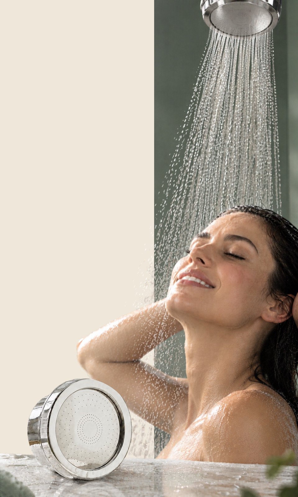
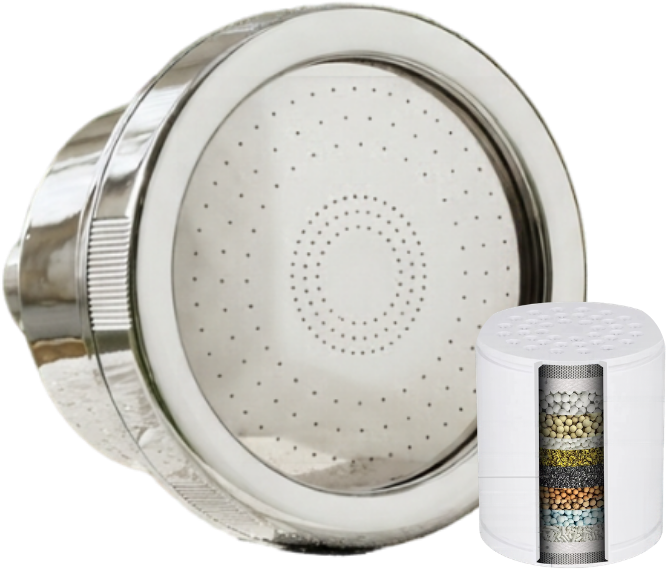
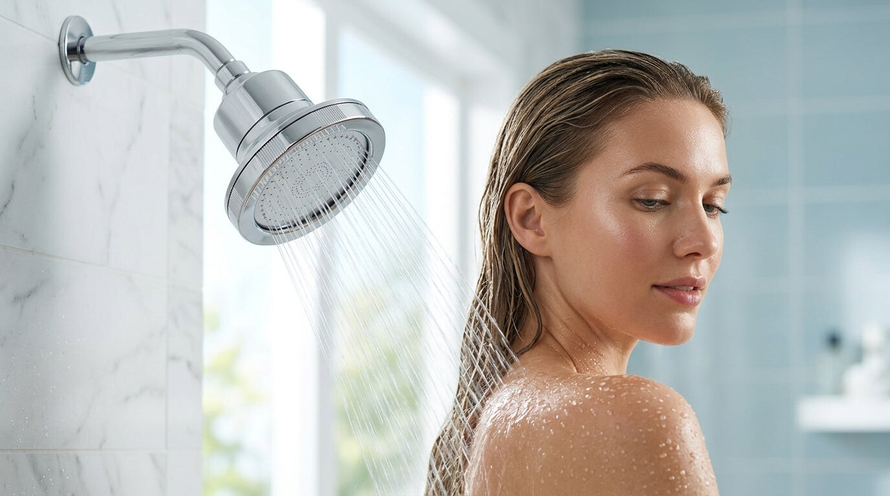
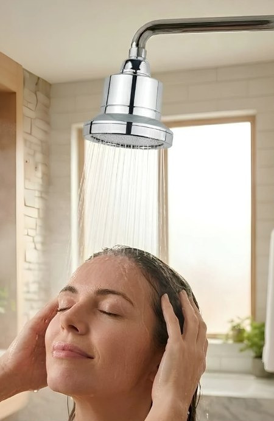
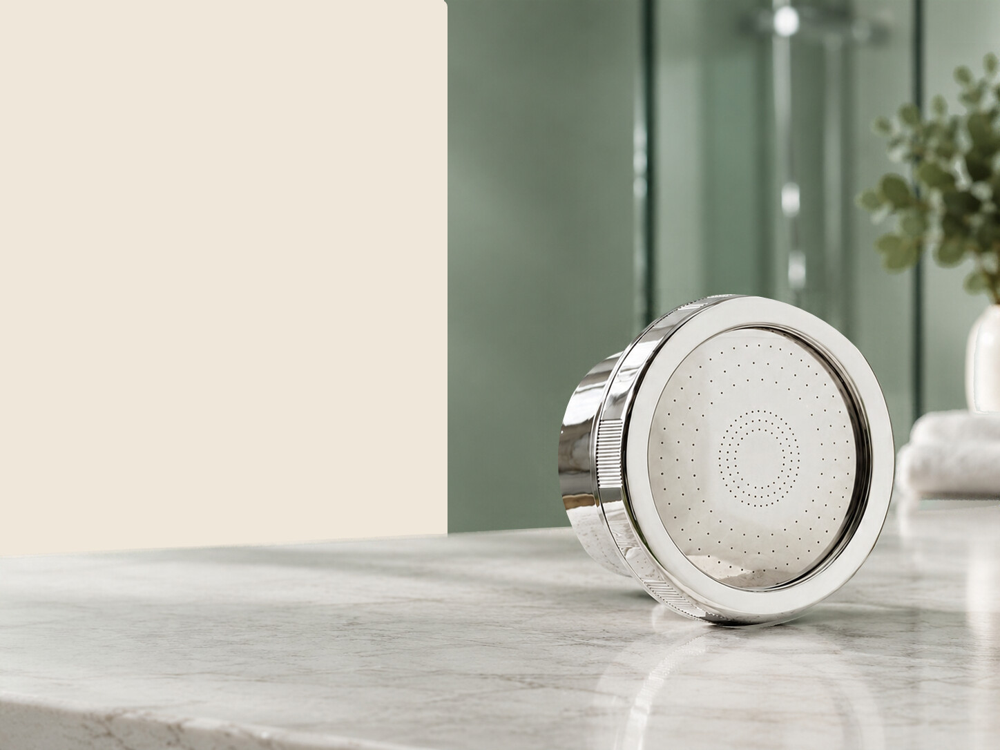
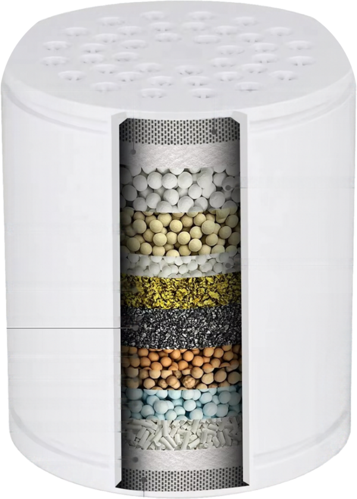
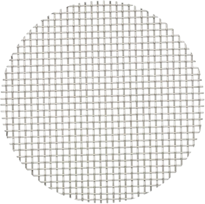
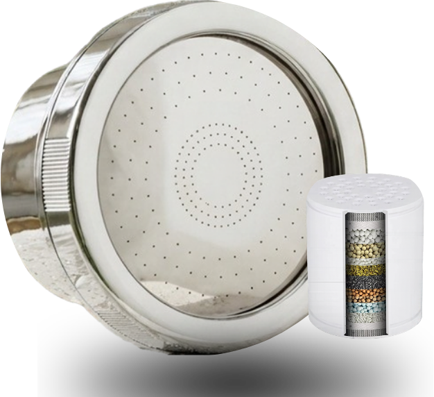
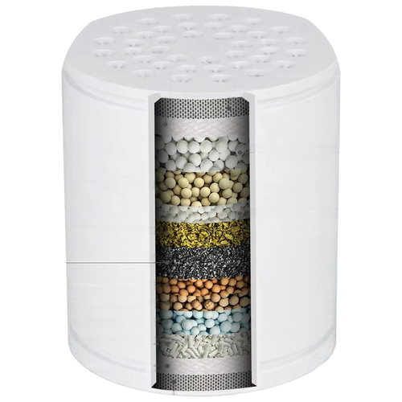

A free guide from Plush
Know Your Water
What's in your city's water, and what to do about it.
- 1Read your city's water report
- 2Build a better shower routine
- 3Get the most from your Plush

A free guide from Plush
What's in your city's water, and what to do about it.

Before you start
Everything on your shower shelf was picked by you. The water came with the apartment, the house, the city.
This guide shows you what's in it, in plain words. Then it builds a better shower routine around it, step by step.
Find your city's water report and read it in 30 seconds.
Six daily habits, a 10-minute shower, and what to do each week.
How it works, the install, Day 30 and your next cartridge.
No scare tactics, no lab coat. Your city's own numbers, what they mean, and simple habits you can start tonight.

Part 1 · Know your water
A typical shower runs about 16 gallons through your shower head. Shower every day and that's nearly 6,000 gallons a year. Your hair and skin meet that water before they meet any product. So it's worth knowing what's in it.
Typical shower: about 16 gallons over about 8 minutes (Alliance for Water Efficiency, Home Water Works). 1 U.S. teaspoon is about 4.9 mL. Circles drawn to scale by area.
It's called a Consumer Confidence Report, or CCR. Some cities call it a Water Quality Report. Same thing.
Every community water system in the U.S. That's any system serving at least 25 people, or 15 homes, all year. If you pay a water bill to a city or a utility, you're covered. The rule comes from the Safe Drinking Water Act.
Every year, by July 1. It covers the year before. So the report you'll find this year shows last year's tests.
A river, a lake, a reservoir, or groundwater from wells.
The steps your utility uses before the water reaches your pipes.
Every regulated substance found in testing, with the level measured.
Whether a legal limit was exceeded, and what the utility did about it.
On a private well? Wells aren't covered by these reports. You'd have to test the water yourself, with a certified lab.
The report talks about drinking water. Your shower runs on the same water, from the same pipes. Your shower head is the last stop before it reaches you.
Four ways. The first one works most of the time.
Renting? Your landlord may pay the water bill, but the report still covers your water. Search by your city or your utility's name.
Tip. Big cities sometimes have several water systems. If your report lists more than one, look for the area or ZIP code that matches your home.
Search screen above is an illustration. Your results will look different.
Skip the intro pages. Go straight to the big table. It usually looks like this.
| Substance | Unit | MCL 2 | Your level 2 | Range | Violation 1 | Likely source |
|---|---|---|---|---|---|---|
| Chlorine 3 | ppm | MRDL 4 | 1.2 | 0.6 – 2.0 | No | Water additive used to control microbes |
| Nitrate | ppm | 10 | 1.4 | ND – 2.8 | No | Runoff from fertilizer use |
| Total trihalomethanes | ppb | 80 | 34 | 18 – 51 | No | By-product of drinking water disinfection |
Example only. Numbers are made up to show the layout. Your city's table will have its own substances and numbers.
Detected doesn't mean unsafe. Reports list everything that was found, even at levels far below the limits. The report gives you the numbers. What you do with them is up to you.
03 · Read it in 30 seconds
Every report uses the same short words. Here they are.
| Unit | Means | Same as |
|---|---|---|
| ppm | parts per million | mg/L (milligrams per liter) |
| ppb | parts per billion | µg/L (micrograms per liter) |
1 ppm is about one drop of water in a 13-gallon kitchen trash can full of water.
1 ppb is about one drop in 13,000 gallons. That's a backyard pool.
1 ppm = 1,000 ppb. Always compare numbers in the same unit. A drop is about 0.05 mL.
Your utility adds a disinfectant to keep the water clean all the way through the pipes to your tap. That's required, and it's a good thing.
The classic. It's the reason some showers smell a little like a swimming pool.
Chlorine combined with a small amount of ammonia. It lasts longer in big pipe networks, so many large cities use it.
More than one in five Americans gets water treated with chloramine, according to the EPA. Federal rules cap both at 4 ppm (4 mg/L), as a yearly average.
Find the disinfectant line in your report. Look for chlorine, free chlorine, total chlorine, chloramine, chloramines or monochloramine. Still not sure? Your utility will tell you in one phone call.
Filters are built for specific jobs. Different filter materials handle different things, at different speeds. Knowing which disinfectant your city uses helps you judge any filter honestly, including ours.
Straight talk. Plush's cartridge is built around chlorine. Chloramine is harder to filter for every kind of shower filter, ours included. If your city uses it, now you know what to expect.
A good question to ask any filter brand: "What is your cartridge designed to reduce, and was it tested?" A clear brand will give you a clear answer.
Hard water is water with a lot of dissolved calcium and magnesium. It's not a safety issue. It's what leaves white spots on your shower door.
Your report may list hardness in mg/L (sometimes written "as CaCO₃") or in grains per gallon (gpg). To convert: 1 gpg = 17.1 mg/L.
Scale used by the U.S. Geological Survey.
On glass doors, tiles and faucets, once the water dries.
A white or tan crust around the holes of your shower head.
Soap and shampoo that don't foam up as much as you'd expect.
Straight talk. Plush is not a water softener. No shower filter removes hardness. If very hard water and white spots are your main problem, a water softener is the right tool. We'd rather tell you now.
Quick fix for spots. Wipe the glass with equal parts white vinegar and water, then rinse. A squeegee after each shower keeps them from coming back.
Part 2 · Your shower routine
You've built a routine around products. This part rebuilds it around the one thing every product touches first.

The idea in one line. Products work on the surface. The water touches everything first. So a good routine starts at the shower head.
Every day
Five of them cost nothing. The first one is the only step that works on the water itself.
Every other step happens after the water has already reached you. Filtering at the shower head is the only step that changes the water itself, for every minute of every shower.
This is where Plush comes inVery hot water can leave skin feeling tight. Warm feels almost as good, without the tight feeling after.
Plenty of time to wash and rinse. Longer just means more time under the water, and a bigger water bill.
Shampoo goes on your scalp. Conditioner goes on the lengths and ends. Rinse both well.
Press the towel against your skin and hair. Put your lotion on while your skin is still a little damp.
Hard water dries into white spots. One pass on the glass after each shower, and it stays clear. Keep the squeegee on a hook inside the shower so you don't skip it.
Hair-wash days
A simple order that works. On other days, skip the hair steps.
Give it a few seconds to reach the right temperature.
A full minute. Shampoo spreads better on hair that's soaked.
Fingertips, not nails. The suds wash the lengths on their way down.
Leave it in while you wash your body.
Your hands or a soft cloth. Save scrubs for once or twice a week.
Conditioner out, soap off. Take your time here.
Totally optional. Some people love it.
Then lotion, while your skin is still a little damp.
Every one of those 10 minutes runs through your shower head. That's why, in this routine, the filter comes first.
Water on, body wash, rinse, off. Five minutes is plenty.
Keep your hair out of the water with a clip, or just rinse the scalp with water.
Week, month, year
A few small habits keep your shower, your hair and your filter in shape. Put them in your phone's calendar once, and forget about them.

The one step that matters most
Shampoo, conditioner, serum, body wash. Every product works after the water has already reached you. Plush works on the water.
About what a fresh cartridge every 3 months costs, for every shower you take. Plush Duo already includes your second cartridge.
Based on a $29 cartridge used for 3 months (90 days). Filter capabilities refer to what the filter is designed to reduce, not to the guaranteed presence of those substances in your water. Individual results vary.
Part 3 · Your Plush
Water runs through the cartridge before it reaches you. Every layer has one job.


What it won't do: soften hard water. Removing calcium and magnesium takes a whole-home softener, not a shower head. We'd rather tell you now than on day 30.
Why the cartridge needs changing. Every layer works by reacting with or holding on to what passes through. Over time it fills up. That's why it gets a fresh start every 3 months.
Filter capabilities refer to what the filter is designed to reduce, not to the guaranteed presence of those substances in your water. Individual results vary. Plush is not a medical device and is not intended to diagnose, treat, cure or prevent any condition.

Part 3 · Your Plush
If you can open a jar, you can install Plush. It fits the standard U.S. ½-inch shower arm. No tools, no plumber.
Keep your old shower head in a drawer. Swap it back the day you move out, and take Plush with you.
Email info.tryplush@gmail.com. A real person reads every message and replies within 2 business days.
Day 30
On day 30, unscrew your cartridge and hold it next to a fresh one. No fresh one at hand? Use this page.

Hold yours here
We didn't make it brown.
Your water did.
What you see is what stayed in the cartridge instead of coming out of your shower head.
Every city's water is different, so every cartridge looks different. Some turn tan, some turn rust, some barely change. A color isn't a verdict on your water. It just shows you the filter at work.
Took a day-30 photo? Send it to info.tryplush@gmail.com. We'd love to see what you saw.
Every 3 months
Go by the calendar, not the color. Depending on your water, a cartridge can look clean and still be used up.
Set the reminder now. Open your phone's calendar and add "New Plush cartridge" 3 months after your install date. Then again on the day you change it.
Never run out
Order your next cartridge at myplush.us/products/plush-replacement-cartridge
Your thank-you code for your next order:
PLUSHFAM20% off your next order. One use per customer.
Got Plush Duo? Your second cartridge is already in the box. Day 90 is covered.
Fill it in once
Fill it in with your report open. Print it, or screenshot it and keep it on your phone.
Good questions
The questions we get the most, answered without the fine print.
Plush fits the standard U.S. ½-inch shower arm, the one in almost every home and apartment. If it doesn't fit yours, you have 60 days to send it back for a full refund.
Any filter sits in the water's path, so we won't promise you more pressure. Here's what we can promise: if it doesn't feel right in your shower, you have 60 days to send it back for a full refund.
No. Removing the minerals in hard water takes a whole-home softener, not a shower head. Plush is made to reduce chlorine and catch sediment.
Every 3 months. Go by the calendar, not the color. With Plush Duo, your second cartridge is already in the box.
Depending on your water, your cartridge can come out darker than it went in. That's what it caught before the water reached you. We didn't make it brown. Your water did.
Yes. No tools, no plumber, nothing to drill. Keep your old shower head in a drawer and swap it back the day you move out.
Try it for 60 days. On day 59, if you don't love it, you get all your money back. Email info.tryplush@gmail.com with your order number.
City water in.
Plush water out.
Questions about your report, your shower or your order? Email info.tryplush@gmail.com. A real person reads every message, and we reply within 2 business days.
Sources. U.S. Environmental Protection Agency: Consumer Confidence Reports (epa.gov/ccr) and chloramines in drinking water. Federal disinfectant limits: 40 CFR 141.65. U.S. Geological Survey: hardness of water. Alliance for Water Efficiency, Home Water Works: shower water use.
This guide is for general information only and is not medical advice. Plush is not a medical device and is not intended to diagnose, treat, cure or prevent any condition. Plush is not a water softener. Filter capabilities refer to what the filter is designed to reduce, not to the guaranteed presence of those substances in your water. Individual results vary.
© 2026 Plush · myplush.us